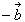
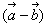
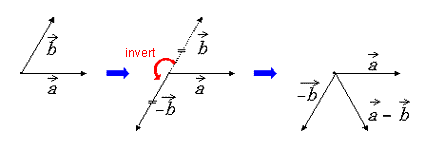
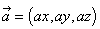
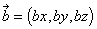
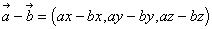
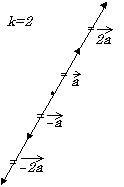
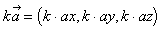

To subtract vector from vector , invert vector 's direction first, and then add vector to the inverted vector () to form the resulting vector :

The following shows how vector subtraction is done:



To find the product of a vector ( ) and a scalar (k), multiply the length of vector
) and a scalar (k), multiply the length of vector  by k, but be careful to take the sign of the scalar into account:
by k, but be careful to take the sign of the scalar into account:

The following shows how scalar multiplication of a vector is done:


Nintendo® Confidential
Copyright © 1999
Nintendo of America Inc. All Rights Reserved
Nintendo and N64 are registered trademarks of Nintendo
Last Updated March, 1999